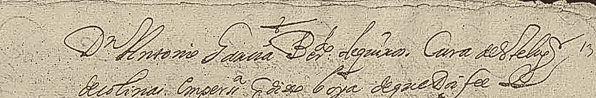
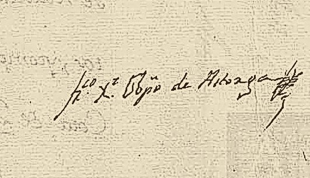
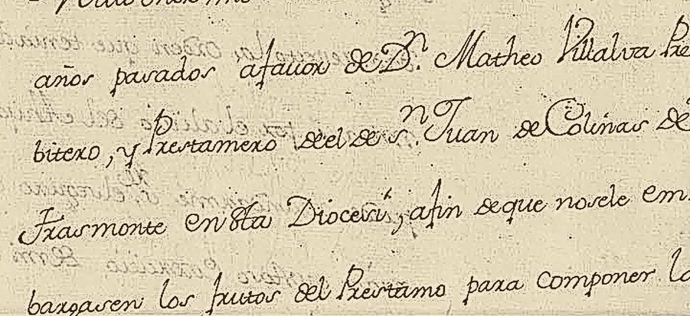
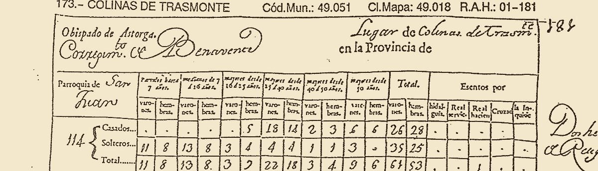

La línea baja por orden de fecha y sólo lleva lo que está escrito en un papel con signatura. Donde no hay papeles, el trazo se rompe: el hueco también es un dato.
El pueblo del conde
1170 — 1768-
1170 · 1526
Trescientos cincuenta y seis años sin una línea. Todo el bajomedievo pasa sin que ningún papel conocido nombre el lugar. Es el hueco mayor del proyecto, y la línea lo dice como es: a trozos.
-
1526Censo de Pecheros
«Colinas» — veinticinco vecinos pecheros
La medición de población más antigua que existe del lugar. Está en el folio 505 vº de las Tierras del Conde de Benavente, entre «Vezinas» y la Vicaría de Nogales, y escribe el nombre a secas: el «de Trasmonte» es añadido de editor.
De 1526 a 1768 —doscientos cuarenta y dos años— Colinas se mueve entre veinticinco y veintiocho vecinos. No crece y no se hunde.
INE, Censo de Pecheros. Carlos I, 1528, t. II, fol. 505 vº, inscr. 45.
-
169412 de mayo
El cura de Colinas tiene nombre por primera vez
Francisco Domínguez, escribano notario público y apostólico, vecino de la villa de Benavente, entra en el lugar a notificar el despacho por el que quince curas del obispado de Astorga han de restituir los diezmos al conde‑duque. Y anota a quién se lo notifica.
«D[o]n Antonio Sanna [?], B[eneficia]do de Quiruelas, Cura del lug[ar] de Colinas, en persona, q[ue] dixo lo oya, de que doi fee.»

La línea que lo nombra, y la rúbrica de Francisco Domínguez, que la escribió. AHNOB, OSUNA, C.466, D.89-90, imagen 29. Servía a la vez el beneficio de Quiruelas. Se anota; de aquí no sale ninguna explicación de la incorporación de 1975. El apellido es lectura dudosa.
AHNOB, OSUNA, C.466, D.89-90, imágenes 28-29.
-
17566 de abril
Hay una ermita en el término, y cuesta doscientos reales al año

Francisco Javier Sánchez Cabezón, obispo de Astorga. No se conserva retrato suyo: queda su rúbrica. Rúbrica autógrafa El obispo escribe al conde‑duque de Benavente sobre su ahijado, don Matheo Villalva, presbítero y prestamero del de San Juan de Colinas de Trasmonte.
«…para componer la Ermita que ay en su territorio respectivo, y ponerla decente de Ornatos […] di orden para que en cada un año se retubiese una porción […] y me parece pues la Cota de 200 r[eale]s cada año»
Y añade que el arrendatario dice haberle embargado seiscientos reales invocando su nombre —«yo no he mandado tal cosa»— y que «estoy en pasar en todo este mes a las cercanías del Lugar de Colinas».
El catálogo la llama «ermita de San Juan Bautista». La carta no dice la advocación: dice que Villalva es prestamero del beneficio de San Juan y que hay una ermita en su territorio. El añadido es del catalogador.

El pasaje de la ermita. Carta del obispo de Astorga al XI conde‑duque de Benavente, Astorga, 6 de abril de 1756. AHNOB, OSUNA, CT.271, D.21.
-
17681 de noviembre
Ciento catorce almas, contadas una a una
Aquí iría el retrato
de don Matheo Villalva,
prestamero de San JuanNo se conserva retrato. La imagen sería una interpretación, no un parecido. Interpretación El Censo de Aranda no cuenta vecinos: cuenta personas, por sexo, edad y estado. Sesenta y un varones y cincuenta y tres hembras. Cuarenta de las ciento catorce son menores de dieciséis años; sólo quince pasan de cincuenta. Ningún hidalgo.
La relación la da el propio cura, y declara además «un Administrador del Estanco del Tabaco»: el único oficio del pueblo que no es labrar ni decir misa.

«Obispado de Astorga. Corregim.to de Benavente — Lugar de Colinas de Trasmonte. Parroquia de San Juan.» Asiento 173. INE, Censo de Aranda, t. I, obispado de Astorga, asiento 173, R.A.H. 01-181.
-
1772Chancillería
Tres aniversarios fundados en la iglesia parroquial
Simón Prieto Montero, clérigo de menores, obtiene ejecutoria sobre el segundo de tres aniversarios dotados en la iglesia de Colinas. El pleito está leído; el libro de memorias y aniversarios que implica, no: está en Astorga y hay que ir.
ARCHV, Registro de Ejecutorias · pendiente: Archivo Diocesano de Astorga.